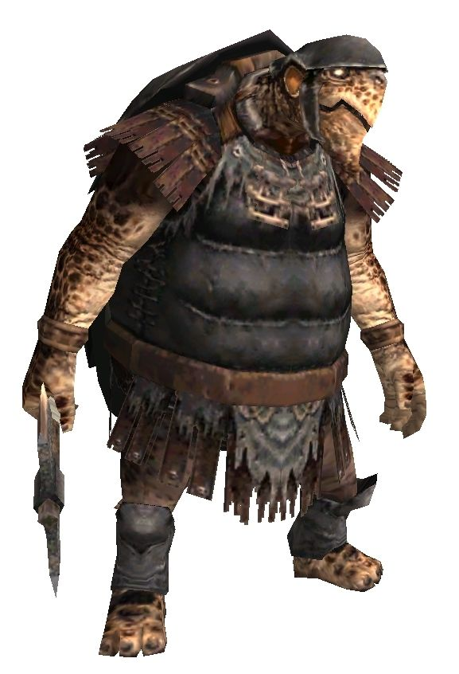

Level 75 reference · Zenith rules
A race of turtle-like bipeds, the Quadav inhabit certain swampy regions, as well as subterranean caverns, on the continent of Quon. Apparently closely tied to the earth in which they work and live, the Quadav identify themselves individually and culturally with the materials with which they work.
As their shells thicken with age, the titles given to individual Quadav change. Within their strict caste system, those chosen to serve in the Elite Guard are given titles portraying hard and precious metals, while those chosen to be magicians are given titles taken from precious gems.
The Quadav have long possessed an understanding of metallurgical technology, and have adapted their skills in metalworking to even create fire-fueled incubators with pipes to carry warm air into the ground to warm the damp caves where their eggs are kept.
The incursion of miners from the Bastok nation have repressed the Quadav and driven them out of territories which they have long occupied, to which they respond with aggressive acts against most foreigners they encounter.
General Information |
 Image source |


Special Attacks
| Special Abilities | Original and Zilart Areas | |||
| Head Butt - Damage Varies with TP. Additional effect: Stun. Possibility of Knockback. | ||||
| Howl - Warcry effect for all Quadav within area of effect | ||||
| Shell Bash - Additional effect: Stun | ||||
| Shell Guard - Defense Boost | ||||
| Ore Toss - Single target attack, high damage, low accuracy (earth damage?) | ||||
| Wrath of Gu'Dha - AoE damage, Knockback and Weight. Only used by Vanguard Notorious Monsters. | ||||
| Note: Notorious Monsters in this family may use all of the above and/or additional unique special abilities. | ||||
Notorious Monsters in Family

Monsters in Family
Adapted from Eden Wiki: Category:Quadav · Contributors and history · CC BY-SA 4.0. Revision 2551. Layout, links and optional background text adapted for Zenith.
Articles
- Adaman Quadav
- Amber Quadav
- Amethyst Quadav
- Ancient Quadav
- Bi'Gho Headtaker
- Bo'Who Warmonger
- Brass Quadav
- Bronze Quadav
- Bu'Ghi Howlblade
- Cobalt Quadav
- Copper Quadav
- Da'Dha Hundredmask
- Da'Shu Knightslayer
- Darksteel Quadav
- De'Pha Unscarred
- De'Vyu Headhunter
- Diamond Quadav
- Elder Quadav
- Emerald Quadav
- Fossil Quadav
- Ga'Bhu Unvanquished
- Garnet Quadav
- Ge'Dha Evileye
- Go'Bha Slaughterer
- Go'Bhu Gascon
- Gold Quadav
- Greater Quadav
- Heliodor Quadav
- Hu'Rhe Marrowgorger
- Iron Quadav
- Ji'Gho Ageless
- Ka'Ghi Trovetaker
- Ku'Jhu Graniteskin
- Lightsteel Quadav
- Magnes Quadav
- Mu'Zha Infernoblade
- Mythril Quadav
- Na'Qba Chirurgeon
- Ni'Ghu Nestfender
- Nickel Quadav
- No'Bhu Unyielding
- No'Mho Crimsonarmor
- Old Quadav
- Onyx Quadav
- Orichalcum Quadav
- Platinum Quadav
- Ruby Quadav
- Sa'Nha Soulsaver
- Sapphire Quadav
- Sapphirine Quadav
- Silver Quadav
- So'Hyu Quakemaker
- Spinel Quadav
- Star Ruby Quadav
- Star Sapphire Quadav
- Steel Quadav
- Topaz Quadav
- Veteran Quadav
- Whitegold Quadav
- Wootz Quadav
- Young Quadav
- Za'Dha Adamantking